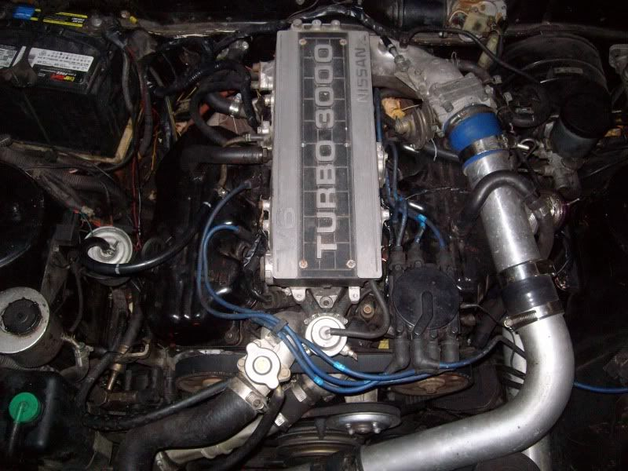

-
Every day now i see some noob who is staring at his stock engine bay full of Nissan smog glory and wandering what he can remove to make it easier to work on. Im going to make a list of what can be removed and still retain basic functionality of the VG30. Lots of people will not agree with what i put here for what ever reason etc. This is what can be removed/relocated in the z31 engine engine bay to clean things up and make it easier to work on. Note: You will not be smog legal if you follow my advice because lets face it if you have to smog test your 80's car you suck at life anyways.
The list:
A/C system
Idle controls, cold start valve and all associated lines and piping
EGR
AIV system
Cruise control
Vacuum canister
Charcoal canister
Windshield washer crap that most likely leaks anyways
All the stupid vacuum hardlines that cross over the front of the motor
On a NA vg30 you can reduce your vacuum lines down to one that goes to the FPR.
Power steering-i actually like my PS so its staying
Anything that you remove from your stock car will have a sacrifice in some way or another. DON'T just start ripping shit off your car just because you get excited after seeing this thread. Think it out and decide exactly what you do and dont need/want.Bolt on, fast, z31. You can only pick two.
Old weaksauce numbers: 391hp/433tq

-


1988 300zxt. gt35, stance, etc. Wheels: Varrstoen ES2 18x9.5 et-13 225/40. 18x10.5 et0 245/40
1990 jetta vr6'd -
Bum thanks for elaborating on that. I wanted to do that last night but was too tired. About the comment i made regarding the smog tasting it was a joke so don't take people too seriously. I am by no means telling people to start ripping shit out of their car for no reason. I am just presenting info and people can do what they want with it. I have removed everything on that list except for the power steering which i am keeping. The reason i did remove everything was to free up space in the engine bay because when you have a car that you are constantly working on and making improvements too it can really get in the way. I have had the motor out 4 times so far this year to give you an example.
Reducing the amount of vacuum lines and vacuum operated systems is very helpful on a turbo car running much higher boost than factory. You end up with reliability issues when lines and other ancient equipment that is designed to see low boost gets hit with 28 pounds. Lines get blown off and leaks start to appear.Bolt on, fast, z31. You can only pick two.
Old weaksauce numbers: 391hp/433tq
-
I've taken all of that out plus some, and will soon be going through the entire harness removing any wiring/connectors not used to further clean up the mess that is the stock bay… If this were my daily driver I wouldn't remove any of the AC/Cruise/comfort items etc, but since it is more a fun/weekend/cruise/racing car I am more than happy to have all of it removed if for only the fact of how much it cleans up the bay and makes everything easier to do. I would do it all again if I had to start over on a clean chassis too. Not to mention if you take out all the engine bay canisters/hvac stuff, you can remove enough under dash equipment to hide a full grown man.
I kept PS too because turning 255+ summer tires on a wet rack without PS is probably more annoying than driving an ACT 6 puck in a parking lot.1985 NA2T(now RB) * 1988 SS x2 * 1984 AE x3 * 2006 350Z

-
I also removed the water lines from the throttle body and looped them over & same with the PlenumMatt89 wrote:
The list:
A/C system - Wind down the window, unless you get heat over 30d C every day its not a problem
Idle controls, cold start valve and all associated lines and piping - i removed all of this & still have a steady idle even with a cam regrind
EGR - never had it from OEM ( NewZealand Market Car )
AIV system -
Cruise control - never had it from OEM ( NewZealand Market Car )
Vacuum canister - left it there
Charcoal canister - left it there
Windshield washer crap - wash your window once a weekend takes like 1 minute & its fine
All the stupid vacuum hardlines that cross over the front of the motor - removed them all worked fine
Reduce your vacuum lines down to one that goes to the FPR. - did this also works fine
Power steering-i actually like my PS so its staying - ditto
Removing all the stuff above has made the engine bay much easier to work on, much less piping and a lot less connections and joins.
My motor is recently rebuilt & dosn't breathe too much so i have filters direct on the valve covers.
It is worth noting that I live in NewZealand and here we can get evey type of weather in a day it varies quite a lot.
One minute its 25deg c and then all of a sudden its 5 deg c. My Idle is set off the throtle body and its stabe at 850rpm
( with the regind cams that just where this motor likes to sit )
here is a picture of how it looks
[attachment=1:3fwr6jno]100_1323.JPG[/attachment:3fwr6jno]
[attachment=2:3fwr6jno]100_1321.JPG[/attachment:3fwr6jno]
[attachment=0:3fwr6jno]100_1322.JPG[/attachment:3fwr6jno]85 Turbo Slick Top
__________________________________________________ _____ -
other misc parts that can be removed for weight and space, as az said; some fuctions are lost:
watercock from heater hoses
additional coolant lines (throttle body, upper plenumn, turbo)
plenumn cover
vac tank (hook system directly to manifold to retain functions except in boost)
headlight washer motors
injector cooler fan
clutch fan (w/ e-fan)
fuel pressure regulator solonoid
fuel pressure regulator solonoid control unit (under battery)
pcv system (cap off intake lines but vent valve covers)
unused relays
brake master cylinder heat shields
(definately not a perfect picture but shows ease of working on it and spaced gained)
http://i94.photobucket.com/albums/l119/ … 0_0935.jpg -
perna00 wrote: other misc parts that can be removed for weight and space, as az said; some fuctions are lost:
watercock from heater hoses
additional coolant lines (throttle body, upper plenumn, turbo)
plenumn cover
vac tank (hook system directly to manifold to retain functions except in boost)
headlight washer motors
injector cooler fan
clutch fan (w/ e-fan)
fuel pressure regulator solonoid
fuel pressure regulator solonoid control unit (under battery)
pcv system (cap off intake lines but vent valve covers)
unused relays
brake master cylinder heat shields
(definately not a perfect picture but shows ease of working on it and spaced gained)
http://i94.photobucket.com/albums/l119/ … 0_0935.jpg
Lack of EGR, Idle controls, cold start valve, FPR Solenoid, Heater Water Cock, Cruise…etc Its awesome. Car runs fine IMO, starts up first shot, hardly cranking over before firing…with a blown headgasket.- VG30DET (HE341) 86 300ZX - 1982 280ZX Turbo - Headered NA 1986 300ZX 2+2 - 2000 Xterra - -
came across this while looking for this exact topic. Did any of this trip the CEL? Thanks!
Jose -
We don't have a check engine light. We only have a "your car has more then the mileage recommended to trust the factory o2 and it should be replaced and cut this wire light". -
Cali emissions carss have cels atleast 87 to 89 for the egt and leaky injectorsMrFishHat wrote: We don't have a check engine light. We only have a "your car has more then the mileage recommended to trust the factory o2 and it should be replaced and cut this wire light".- VG30DET (HE341) 86 300ZX - 1982 280ZX Turbo - Headered NA 1986 300ZX 2+2 - 2000 Xterra - -
Can anyone tell me the process to rid the carbon canister? ive noticed a fuel vent line runnin to it and lil a skeptic. Also what is all that junk on the front driver side of the engine? seems like an air pump or smog pump with solenoids and sensors. In addition how can i remove the blower motor housing with all those wires there? is there any importance i should be aware of? Really im lookin for a write up to rid most of this stock junk, build performance, clean engine bay, and see what kind of engine status i get by free'n up all this space. Anything is greatly appreciated. I have an 88T. Already rid the entire heater core, vents, ac unit, evap, condensor, high psi lines, small vac canister, cruise control, etc. freed up a lot of room underneath dash and some in engine bay. thanks again for all the help!-Lex Talionis- Do it for the fans!
-
The writeup is on tbo's site but the only address I can find for that is bad. http://tboz.no-ip.com:10000/
anyone else have it?Originally posted by AZ-ZBum -
yea i got it! thanks! just tired last night and over looked it. Very helpful. I want to know a little more what to expect when i remove these items, such as setting the proper idle to ya needs, things to watch for when these mods are performed, etc., looking for useful information on these parts what they do, how they work, things to look for while performing this work, how it is on fuel and air mixture, and what to be on the look out if something bad happens. I mean they are there for a reason and just curious on operation and what happens when blocked. Thanks for all the info. My 88T is coming a loooong way due to yall on Z31Performance and Zdriver.CruiserZ31 wrote: The writeup is on tbo's site but the only address I can find for that is bad. http://tboz.no-ip.com:10000/
anyone else have it?-Lex Talionis- Do it for the fans!
-
So on our race car I think I've removed lot of this stuff already, though not being a true Z Guy just loving driving this one and toying with it. I don't know a ton about them and their mechanicals. As in I don't know what or where some of this crap is. LOL. So any help would be appreciated.
The list:
A/C system gone this stuff was obvious
Idle controls, cold start valve and all associated lines and piping no idea what or where this stuff is
EGR gone also easy to identify and remove
AIV system what in the heck is that
Cruise control deleted
Vacuum canister took out one small one right behind the pass. headlight
Charcoal canister think this is the big one behind the headlight on the pass side but doesn't it link to the gas tank.
Windshield washer crap that most likely leaks anyways long gone
All the stupid vacuum hardlines that cross over the front of the motor know where they are but really you can take those out.
On a NA vg30 you can reduce your vacuum lines down to one that goes to the FPR. this is what we have but don't know waht an FPR is
Power steering-i actually like my PS so its staying ours is goner
Thanks for the help, also if you can tell me about anything else that can go bye bye will be happy to.
-
Any update on the Power Steering removal?
I wanna do it to mine since my pump and everything is out.

{kind=link}
Copyright © 2006–. All rights reserved. Privacy Policy